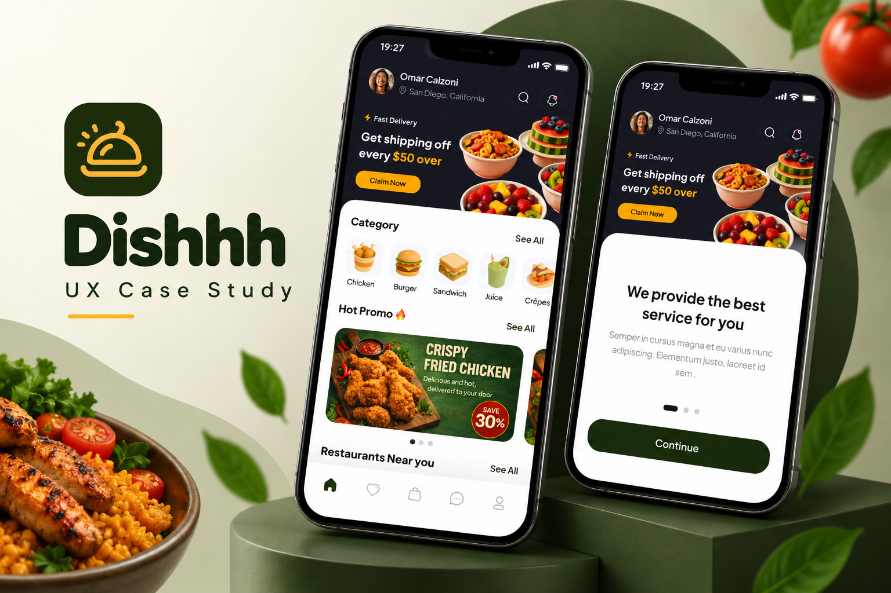
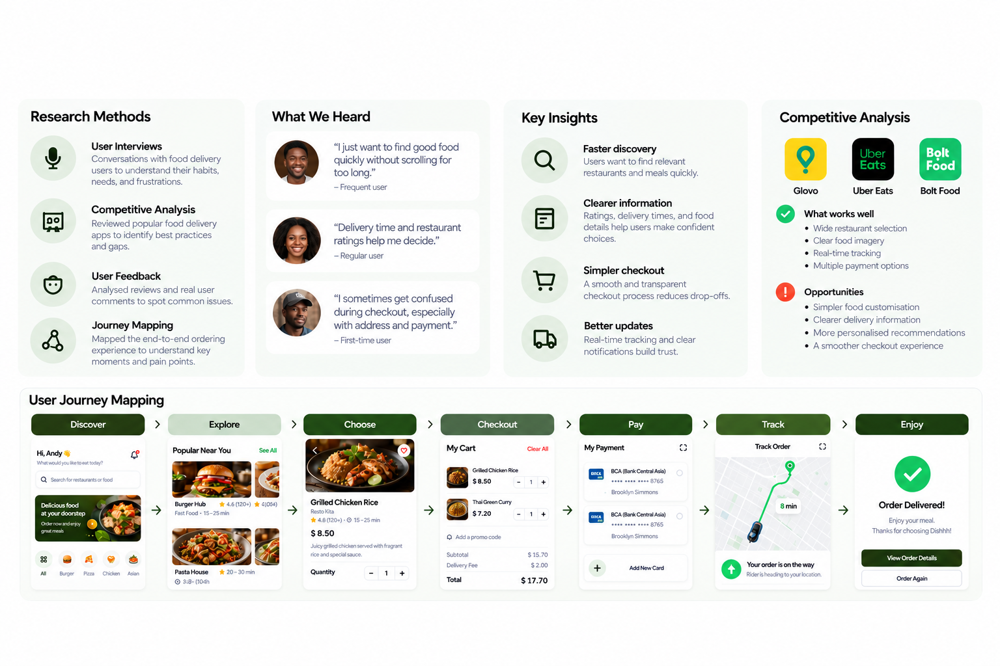
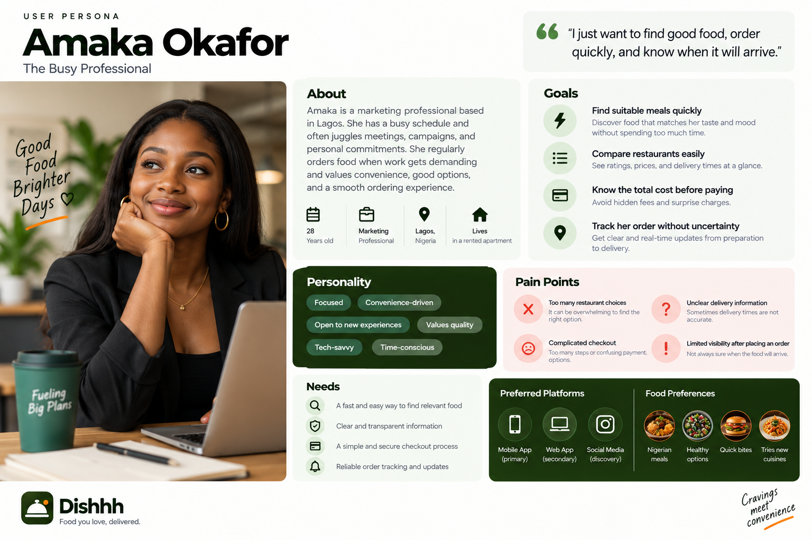
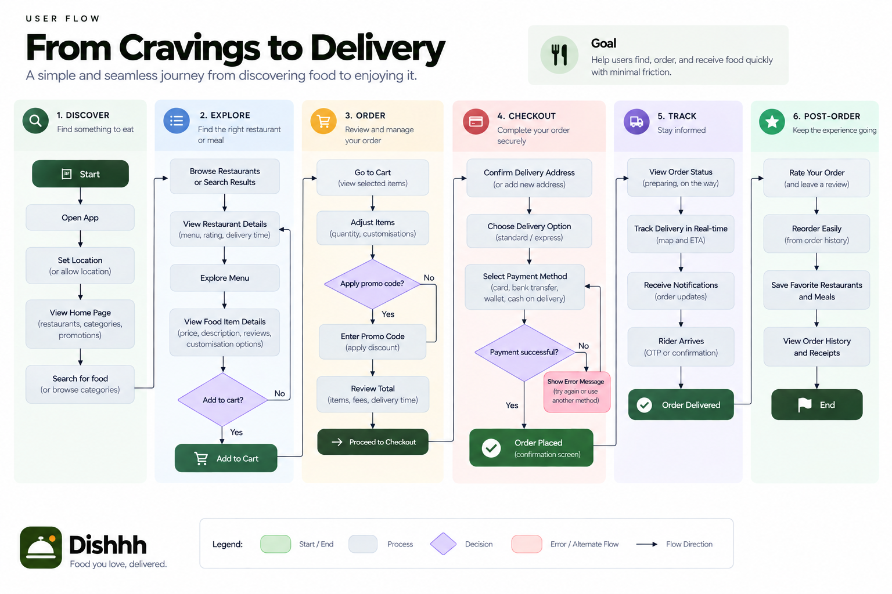
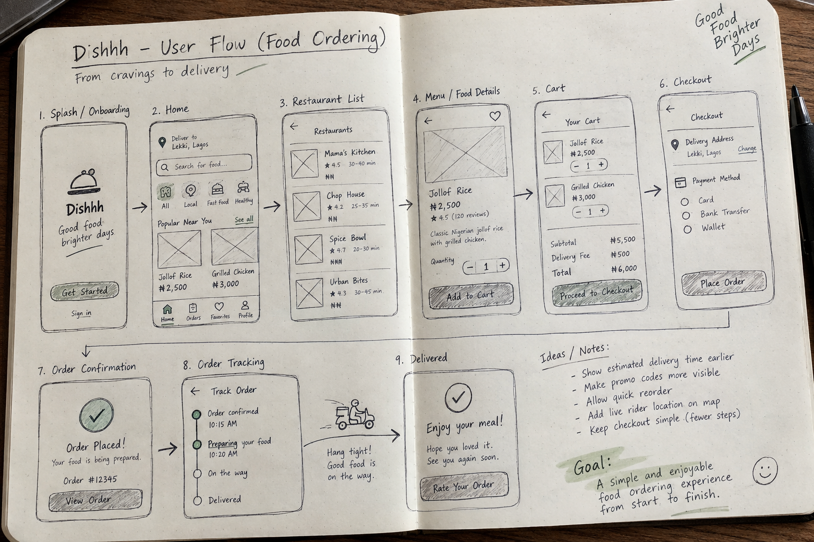

A simpler way to discover, order, and track food

Dishhh is a food delivery experience designed to help users move from discovering food to receiving their order with less friction.
I worked across the core experience, including onboarding, restaurant discovery, search and filters, food details, cart, checkout, payment, order tracking, reviews, and account management.
The core design challenge was to make a food delivery journey feel simple and predictable, while giving users enough information to confidently choose a restaurant, customise their order, complete payment, and track delivery.
Design focus: Discovery • Ordering • Checkout • Tracking • Retention
Food delivery should feel effortless, not overwhelming
The challenge was to create a food delivery experience that helps users find what they want quickly, make confident choices, and complete an order without unnecessary friction.
The journey spans several decisions: finding restaurants, comparing food, checking delivery details, managing the cart, choosing payment, and tracking the order.
The key question became:
I focused on three areas:
The goal was to turn a multi-step ordering process into a clear, connected experience.
Understanding how people choose and order food
I focused my discovery around the complete ordering journey, from finding a restaurant to receiving the order.
I reviewed the experience across key areas:
This helped me identify the key opportunities: make discovery easier, reduce decision friction, simplify checkout, and keep users informed after placing an order.


From research to design direction
The research pointed to four clear opportunities:

Exploring a better way to order
I explored different ways to make the food ordering journey feel faster and more intuitive.
The focus was on:
I used these directions to shape a flow that moves naturally from Discover → Explore → Choose → Order → Checkout → Track → Enjoy.
The final direction prioritised simplicity while keeping the information users need visible at each stage.

From discovery to delivery
I structured the experience around a simple progression:
Each step has a clear purpose, helping users move forward without unnecessary complexity.
The flow connects restaurant discovery, food selection, cart management, payment, order confirmation, and delivery tracking into one continuous journey.
The focus was to make the next action obvious while keeping important information accessible throughout the experience.
Making the flow easier to understand
I validated the key ordering journey by reviewing the main user tasks across discovery, food selection, cart, checkout, and order tracking.
I focused on whether users could:
The validation helped refine the information hierarchy, interaction patterns, and flow between screens, keeping the experience focused on the user's next action.
The final direction aimed to make ordering feel clear, predictable, and easy from start to finish.
A more seamless food ordering experience
The final design brought the core experience into one connected journey, from discovering food to tracking delivery.
The main improvements focused on:
The result is an experience designed to make food ordering simpler, more transparent, and easier to navigate from start to finish.
Designing for the complete ordering experience
Dishhh reinforced the importance of looking beyond the individual screen and designing the entire customer journey.
The project pushed me to think carefully about how discovery, decision-making, checkout, payment, and delivery tracking connect together.
My biggest takeaway was that a good food delivery experience should make users feel informed and in control at every step.
If I continued the project, I would further validate the core flows with real users and refine the experience based on their behaviour and feedback.